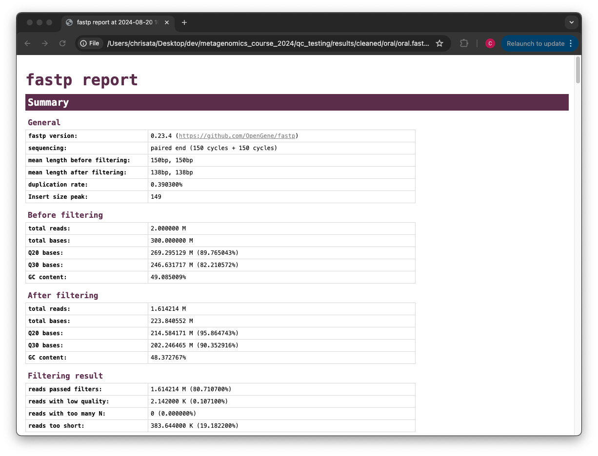
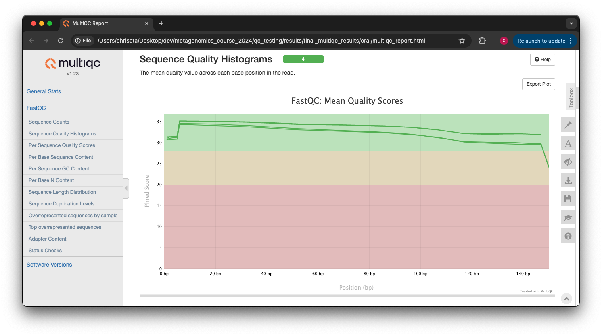

Quality control and filtering of the raw sequence files
![]()
Prerequisites
These instructions are for the course VM. To run externally, please refer to the section at the end.
You will not be able to use Ctrl+C for copying and Ctrl+P for pasting in the VM terminals. Instead, we recommend using right click and selecting copy/paste.
For this practical we will need to a sample dataset. The sample dataset should already be in /home/training/course_dir/data_dir/qc_data/. Check if it is there. If not, go to the Downloading data section
For this practical we will need to a sample dataset. The sample dataset should already be in /home/training/course_dir/data_dir/qc_data. If not, you should download and decompress the data as follows:
mkdir -p /home/training/course_dir/data_dir
cd /home/training/course_dir/data_dir
wget https://ftp.ebi.ac.uk/pub/databases/metagenomics/mgnify_courses/metagenomics_2025/qc-practical/qc_data.tar.gz
tar -xzvf qc_data.tar.gz
# you should now have the quality subdirectory in your /home/training/QC_session. All the data you will need to run the practicals will be in this subdirectory
#you can now remove the qc_data.tar.gz
rm qc_data.tar.gzThis practical (and the others) will generate quite a few output files from the different commands. It’s therefore recommended you keep your results well organised into different subdirectories, starting with the creation of a qc_results directory that will contain everything else.
mkdir /home/training/course_dir/work_dir/Day_2/qc_resultsYou should now have in your /home/training/course_dir directory, the following subdirectories (data_dir/qc_data/ and work_dir/Day_2/qc_results/). Make sure both are there before moving onto the next steps. You might run into permission issues later if you have not created them properly.
For this tutorial, you’ll need to move into the working directory (/home/training/course_dir/data_dir/qc_data) and start a Docker container. Set the variables DATADIR and RESDIR as instructed.
cd /home/training/course_dir/data_dir/qc_data
chmod -R 777 /home/training/course_dir/data_dir/qc_data
export DATADIR=/home/training/course_dir/data_dir/qc_data
chmod -R 777 /home/training/course_dir/work_dir/Day_2/qc_results
export RESDIR=/home/training/course_dir/work_dir/Day_2/qc_results
xhost +You will get the message “access control disabled, clients can connect from any host”
Again, to avoid permission issues, it’s very important that the directories $DATADIR and $RESDIR variables are exported correctly before running the container. You can check this by running:
echo $DATADIR
echo $RESDIRThese commands should print out the paths for those variables. If it’s not printing anything, go back to the last instruction before proceeding.
Now start the Docker container:
docker run --rm -it --user 1001 -e DISPLAY=$DISPLAY -v $DATADIR:/opt/data -v $RESDIR:/opt/results -v /tmp/.X11-unix:/tmp/.X11-unix:rw -e DISPLAY=unix$DISPLAY quay.io/microbiome-informatics/metagenomics-qc-practicalQuality control and filtering of the raw sequencing read files
In the following exercises, you’ll learn how to check the quality of short read sequences, identify adaptor sequences, remove adapters and low-quality sequences, and construct a reference database for host decontamination.
These are the files we’ll use for the practical:
ls /opt/dataQuality assessment with FastQC and multiqc
We will start by using a tool called FastQC, which will generate a report describing multiple quality measures for the given reads.
mkdir -p /opt/results/fastqc_results/oral
fastqc /opt/data/oral_human_example_1_splitaa.fastq.gz -o /opt/results/fastqc_results/oral
fastqc /opt/data/oral_human_example_2_splitaa.fastq.gz -o /opt/results/fastqc_results/oral
chown 1001 /opt/results/fastqc_results/oral/*.htmlThe -o option used with FastQC sends the output files to the given path.
Navigate to Files → Home → course_dir → work_dir → Day_2 → qc_results → fastqc_results → oral in your VM
Right-click on file oral_human_example_1_splitaa_fastqc.html, select ‘open with other application’, and open with Firefox.

Spend some time looking at the ‘Per base sequence quality.’
For each position, a BoxWhisker-type plot is drawn:
- The central red line is the median value.
- The yellow box represents the inter-quartile range (25-75%).
- The upper and lower whiskers represent the 10% and 90% points.
- The blue line represents the mean quality.
The y-axis on the graph shows the quality scores. The higher the score, the better the base call. The background of the graph divides the y-axis into very good quality calls (green), calls of reasonable quality (orange), and calls of poor quality (red). The quality of calls on most platforms will degrade as the run progresses, so it’s common to see base calls falling into the orange area towards the end of a read.
What does this tell you about your sequence data? When do the errors start?
From the distribution of quality scores, we can tell that the sequencing for these reads is a standard good quality run, with the errors mainly starting at the 3’ end of the reads being a common feature.
In the pre-processed files, we see two warnings, as shown on the left side of the report. Navigate to the “Per bases sequence content.”

At around 15-19 nucleotides, the DNA composition becomes very even; however, at the 5’ end of the sequence, there are distinct differences. Why do you think that is?
This bias at the beginning is a feature of the library preparation method used. In this case, a transposase-based fragmentation was used to break up the DNA for sequencing, which has biased towards certain bases.
Open up the FastQC report corresponding to the reversed reads.
Are there any significant differences between the forward and reverse files?
There are no noticeable differences between the two directions, which is a good sign about the quality of the sequencing.
For more information on the FastQC report, please consult the ‘Documentation’ available from this site: FastQC Documentation
We are currently only looking at two files, but often we want to look at many files. The tool multiqc aggregates the FastQC results across many samples and creates a single report for easy comparison. Here we will demonstrate the use of this tool.
mkdir -p /opt/results/multiqc_results/oral
multiqc /opt/results/fastqc_results/oral -o /opt/results/multiqc_results/oral
chown 1001 /opt/results/multiqc_results/oral/*.htmlIn this case, we provide the folder containing the FastQC results to multiqc, and similar to FastQC, the -o argument allows us to set the output directory for this summarized report.
Navigate to Home → course_dir → work_dir → Day_2 → qc_results → oral in your VM
Right-click on file multiqc_report.html, select ‘open with other application’, and open with Firefox.

Scroll down through the report. The sequence quality histograms show the above results from each file as two separate lines. The ‘Status Checks’ show a matrix of which samples passed check and which ones have problems.
What fraction of reads are duplicates?
For both directions, the fraction of duplicate reads is 0.9%.
Quality filtering with fastp
So far we have looked at the raw files and assessed their content, but we have not done anything about removing duplicates, sequences with low quality scores, or removal of the adaptors. So, let’s start this process.
Our first step will be to perform quality filtering of the reads using a tool called fastp, which is versatile, easy to use, and fast.
mkdir -p /opt/results/cleaned/oralThe fastp command you will run contains multiple parameters, so let’s slowly deconstruct it:
fastp --in1 /opt/data/oral_human_example_1_splitaa.fastq.gz \
--in2 /opt/data/oral_human_example_2_splitaa.fastq.gz \
--out1 /opt/results/cleaned/oral/oral_human_example_1_splitaa.trimmed.fastq.gz \
--out2 /opt/results/cleaned/oral/oral_human_example_2_splitaa.trimmed.fastq.gz \
-l 50 --cut_right --cut_right_window_size 4 --cut_right_mean_quality 20 -t 1 \
--detect_adapter_for_pe \
--json /opt/results/cleaned/oral/oral.fastp.json --html /opt/results/cleaned/oral/oral.fastp.html--in1/--in2— The two input paired-end read files--out1/--out2— The two output files after filtering-l— Minimum read length required, reads below 50 in this case are discarded--cut_right/--cut_right_window_size/--cut_right_mean_quality— These three options all work together.--cut_rightcreates a window, of size specified by--cut_right_window_size, which will slide from the front to the tail of the reads, calculating the mean quality score in the window at every step. If at any point, the mean quality score value is lower than the one specified by--cut_right_mean_quality, then the bases of that window and everyting to its right are immediately discarded for that read.-t 1— Will trim the tail of its final base, as it’s a lot lower quality than other positions. This is a setting you should set very purposefully and for good reason, like we’re doing here.--detect_adapter_for_pe— One of the very useful features offastpis that it can detect adapters automatically and remove them, which this parameter activates.--json/--html— Outputs a summary report similar to FastQC, in both .json and .html formats.
Find and open the .html report. How many reads were removed? How has the average quality of the reads changed? 
Comparing the total reads metric in the before and after sections of the report, we can see that about 3.9 million reads were removed completely. The average quality of the reads has already increased, which can be seen from comparing the Q20/Q30 bases before and after filtering.
Decontamination with bowtie2
Next, we want to remove any potential contamination in our reads, which we’ll do using a tool called bowtie2. It is always good to routinely screen for human DNA (which may come from the host and/or staff performing the experiment). However, if the sample is from a mouse, you would want to download the mouse genome. The first step in the decontamination process is therefore to make a database that our reads will be searched against for sources of contamination.
In the following exercise, we are going to use two “genomes” already downloaded for you in the decontamination folder. To make this tutorial quicker and smaller in terms of file sizes, we are going to use PhiX (a common spike-in) and just chromosome 10 from human.
ls /opt/data/decontamination
# Output: GRCh38_chr10.fasta phix.fastaFor the next step, we need one file, so we want to merge the two different fasta files. This is simply done using the command-line tool cat.
cat /opt/data/decontamination/GRCh38_chr10.fasta /opt/data/decontamination/phix.fasta > /opt/data/decontamination/chr10_phix.fastaYou will often need to build indices for large sequence files - including sequencing files and reference files - to speed up computation. To build a bowtie index for our new concatenated PhiX-chr10 file, run the following script. NOTE. The indexing step can take a while to run (~ 2 -3 minutes for the example used in this practical)
bowtie2-build /opt/data/decontamination/chr10_phix.fasta /opt/data/decontamination/chr10_phix.index
#check output - indexed files end with *bt2
ls /opt/data/decontamination/chr10_phix.index*bt2
# opt/data/decontamination/chr10_phix.index.1.bt2
# opt/data/decontamination/chr10_phix.index.2.bt2
# opt/data/decontamination/chr10_phix.index.3.bt2
# opt/data/decontamination/chr10_phix.index.4.bt2
# opt/data/decontamination/chr10_phix.index.rev.1.bt2
# opt/data/decontamination/chr10_phix.index.rev.2.bt2It is possible to automatically download a pre-indexed human genome in bowtie2. Commonly-used bowtie2 indices can be downloaded from https://bowtie-bio.sourceforge.net/bowtie2/index.shtml.
Now we are going to use our new indexed chr10_phix reference and decontaminate our already quality-filtered reads from fastp. Run bowtie2 as below. NOTE. This alignment step can take a few minutes to run.
bowtie2 -1 /opt/results/cleaned/oral/oral_human_example_1_splitaa.trimmed.fastq.gz \
-2 /opt/results/cleaned/oral/oral_human_example_2_splitaa.trimmed.fastq.gz \
-x /opt/data/decontamination/chr10_phix.index \
--un-conc-gz /opt/results/cleaned/oral/oral_human_example.fastq.gz \
--very-sensitive --dovetail > /dev/null-1- input read 1-2- input read 2-x- reference genome index filename prefix (minus trailing .X.bt2)--un-con-gz- write pairs that didn’t align concordantly to assigned filepath (this will be your cleaned reads)--very-sensitive- set stringent parameters to call reads as a mapped read (Same as -D 20 -R 3 -N 0 -L 20 -i S,1,0.50)--dovetail- concordant when mates extend past each other (ie. the paired alignments overlaps one another )
From the bowtie2 output on the terminal, what fraction of reads have been deemed to be contaminating?
As the bowtie2 output says, 3.15% reads have aligned to the reference, and are therefore contaminating.
bowtie2 changes the naming scheme of the output files, so we rename them to be consistent:
mv /opt/results/cleaned/oral/oral_human_example.fastq.1.gz /opt/results/cleaned/oral/oral_human_example_1_splitaa_trimmed_decontam.fastq.gz
mv /opt/results/cleaned/oral/oral_human_example.fastq.2.gz /opt/results/cleaned/oral/oral_human_example_2_splitaa_trimmed_decontam.fastq.gzPost-QC assessment with FastQC and multiqc
Using what you have learned previously, generate a FastQC report for each of the *trimmed_decontam.fastq.gz files. Output the new fastqc report files in the same /opt/results/fastqc_results/oral directory as last time.
fastqc /opt/results/cleaned/oral/oral_human_example_1_splitaa_trimmed_decontam.fastq.gz -o /opt/results/fastqc_results/oral
fastqc /opt/results/cleaned/oral/oral_human_example_2_splitaa_trimmed_decontam.fastq.gz -o /opt/results/fastqc_results/oral
chown 1001 /opt/results/fastqc_results/oral/*.htmlAlso generate a multiQC report, with /opt/results/fastqc_results/oral as input. The reason we generated the new FastQC reports in the same directory is so that you can compare how the reads have changed after the quality filtering and decontamination steps in the same final multiqc report.
mkdir -p /opt/results/final_multiqc_results/oral
<you construct the command>mkdir -p /opt/results/final_multiqc_results/oral
multiqc /opt/results/fastqc_results/oral -o /opt/results/final_multiqc_results/oralView the MultiQC report as before using your browser.

Scroll down through the report. The sequence quality histograms show the above results from each file as four separate lines. The ‘Status Checks’ show a matrix of which samples passed check and which ones have problems.
What do you think of the change in sequence quality histograms? Have they improved?
The sequence quality histograms show clearly that the cleaned and decontaminated reads have improved quality throughout the reads now.
The reads have now been decontaminated and can be uploaded to ENA, one of the INSDC members. It is beyond the scope of this course to include a tutorial on how to submit to ENA, but there is additional information available on how to do this in this Online Training guide provided by EMBL-EBI
Assembly PhiX decontamination
In the following exercises, you will generate a PhiX BLAST database and run a BLAST search with a subset of assembled freshwater sediment metagenomic reads to identify contamination.
PhiX, used in the previous section of this practical, is a small bacteriophage genome typically used as a calibration control in sequencing runs. Most library preparations will use PhiX at low concentrations; however, it can still appear in the sequencing run. If not filtered out, PhiX can form small spurious contigs that could be incorrectly classified as diversity.
makeblastdb -in /opt/data/decontamination/phix.fasta -input_type fasta -dbtype nucl -parse_seqids -out /opt/data/decontamination/phix_blastDBPrepare the freshwater sediment example assembly file and search against the new BLAST database. This assembly file contains only a subset of the contigs for the purpose of this practical.
mkdir -p /opt/results/blast_results
gunzip /opt/data/freshwater_sediment_contigs.fa.gz
blastn -query /opt/data/freshwater_sediment_contigs.fa -db /opt/data/decontamination/phix_blastDB -task megablast -word_size 28 -best_hit_overhang 0.1 -best_hit_score_edge 0.1 -dust yes -evalue 0.0001 -min_raw_gapped_score 100 -penalty -5 -soft_masking true -window_size 100 -outfmt 6 -out /opt/results/blast_results/freshwater_blast_out.txtThe BLAST options are:
-query— Input assembly fasta file.-out— Output file-db— Path to BLAST database.-task— Search type -“megablast”, for very similar sequences (e.g, sequencing errors)-word_size— Length of initial exact match
cat /opt/data/blast_outfmt6.txt /opt/results/blast_results/freshwater_blast_out.txt > /opt/results/blast_results/freshwater_blast_out_headers.txt
cat /opt/results/blast_results/freshwater_blast_out_headers.txtAre the hits significant?
The hits are very significant - they all have e-value hits of 0, which is the lowest it can go, and therefore the most confident the hit can be.
What are the lengths of the matching contigs? We would typically filter metagenomic contigs at a length of 500bp. Would any PhiX contamination remain after this filter?
The lengths of the matching contigs, in order, are: 596, 426, 389, and 385. You’d therefore still have the longest contig still present using this filter, as it’s 596 bases long.
Now that PhiX contamination was identified, it is important to remove these contigs from the assembly file before further analysis or upload to public archives. You can either remove these matching contigs directly, or use a tool like bowtie2 to achieve this like you learned in the last section.
Using Controls
This exercise will use 16S amplicon sequencing runs to look at the analysis of sequencing controls. Given two mystery sequencing runs, you will figure out which of the two is a control by comparing their microbial diversity, and also ascertain which kind of control it is.
The mystery sequencing runs
Going to /opt/data/mystery_reads, you will find two mystery FASTQ files. You have this information about them:
- They are both amplicon sequencing runs.
- One of the runs is a control
- One of the runs is a mouse gut metagenome sequencing run of the 16S rRNA subunit.
Imagine you’re the one who sequenced these runs, and you want to analyse them, however you’ve forgotten which is the control. In this part of the practical, you will figure out which run was meant to be the control, and also the type of control it is, by using command-line tools to compare their microbial diversity.
In particular, you will use a tool called MAPseq and the 16S rRNA reference database SILVA to perform taxonomic classification of the sequencing reads. You will then be able to compare the assignments of the two sequencing runs to rediscover the purpose of each run.
Change into the directory containing the mystery reads, and run ls -lh to see some information about the files.
cd /opt/data/mystery_reads
ls -lh
# total 7.7M
# -rw-r--r-- 1 root root 26K Sep 11 12:24 mystery_reads_A.fastq.gz
# -rw-r--r-- 1 root root 7.6M Sep 11 12:24 mystery_reads_B.fastq.gzCould you make an initial guess about which run is the control from this output?
The fifth column shows the file size, and it’s immediately noticeable how much smaller mystery_reads_A is compared to mystery_reads_B. This could indicate a lack of reads, which is either on purpose in the form of a control, or indicative of potential issues in sequencing.
Converting FASTQ to FASTA with seqkit
MAPseq requires the input reads to be in FASTA format rather than FASTQ. One very versatile and useful bioinformatics tool is SeqKit, which is a suite of commands for sequencing file manipulation.
The SeqKit utility you want to use for the FASTQ-FASTA converstion is fq2fa. Go ahead and convert your FASTQ files like so
seqkit fq2fa mystery_reads_A.fastq.gz -o mystery_reads_A.fasta.gz
seqkit fq2fa mystery_reads_B.fastq.gz -o mystery_reads_B.fasta.gzYou will also need to uncompress the FASTA files before using MAPseq:
gunzip mystery_reads_A.fasta.gz
gunzip mystery_reads_B.fasta.gzThere’s another SeqKit utility that can generate summary metrics on the sequencing runs. Find it from the SeqKit documentation and use it on the mystery runs. What metric gives you another potential hint at the identity of the control?
The stats utility is very useful for getting a quick overview of sequence files:
seqkit stats mystery_reads_*.fasta
# file format type num_seqs sum_len min_len avg_len max_len
# mystery_reads_A.fasta FASTA DNA 229 68,471 299 299 299
# mystery_reads_B.fasta FASTA DNA 77,566 23,192,234 299 299 299The num_seqs metric tells you how many sequences there are in each file. mystery_reads_A seems to have significantly less reads than mystery_reads_B, again hinting at it being a potential control, as you’d expect far more reads from an actual run.
Taxonomic assignment of reads using MAPseq and SILVA
Now that the reads are in the correct format, we can use MAPseq with the SILVA reference database to annotate the reads with taxonomic assignments.
The SILVA reference database is already installed in the container at /SILVA-SSU/, so you can run MAPseq with the following commands:
mapseq -seed 12 -tophits 80 -topotus 40 -outfmt simple mystery_reads_A.fasta /SILVA-SSU/SILVA-SSU.fasta /SILVA-SSU/SILVA-SSU-tax.txt > mystery_reads_A.mseq
mapseq -seed 12 -tophits 80 -topotus 40 -outfmt simple mystery_reads_B.fasta /SILVA-SSU/SILVA-SSU.fasta /SILVA-SSU/SILVA-SSU-tax.txt > mystery_reads_B.mseqThis will generate two files of the .mseq format, which contain a taxonomy assignment for every read that had a match to the SILVA database. There is a lot of information about every matching read, such as matching coordinates, confidence, etc., but for our exercise we want to focus on the final column, which contains the actual assignment. Running these commands will aggregate that final column by computing a count of how many times each taxonomic assignment appears for both runs:
tail -n +2 mystery_reads_A.mseq | cut -f14 | sort | uniq -c | awk '{print $1 "\t" $2}' > mystery_reads_A_counts.tsv
tail -n +2 mystery_reads_B.mseq | cut -f14 | sort | uniq -c | awk '{print $1 "\t" $2}' > mystery_reads_B_counts.tsvFor example:
23 sk__Bacteria;k__;p__Bacillota;c__Bacilli;o__Lactobacillales;f__Lactobacillaceae;g__LactobacillusThis line means that this particular taxon was assigned to 23 different reads by MAPseq.
On your virtual machine, open the two counts files you’ve just generated side-by-side, and compare them. What do you notice about the amount of unique assignments in both files? How about the counts? What is your final conclusion about which run is the control, and the kind of control it is?
It is clear that mystery_reads_A has significantly less microbial diversity than mystery_reads_B. In terms of richness i.e. how many unique taxa there are, mystery_reads_A only has 29, while mystery_reads_B has 123. In terms of abundance i.e. the total counts, only 229 reads were given a taxonomic assignment in mystery_reads_A, while mystery_reads_B has a total read count of 77,565.
From these observations, it becomes clear that mystery_reads_A is the control, and that it is specifically a negative control. Indeed, mystery_reads_A has the accession SRR17185965, and is a water negative control sample, while mystery_reads_B has the accession SRR17185970, and is a mouse gut metagenome sample.
Now that you know it’s a negative control, do you identify any taxa the samples have in common? Can you make any assertions about what this means?
Additional Exercise
If you have finished the practical you can try this step for more practice assessing and trimming datasets, there is another set of raw reads called “skin_example_aa” from the skin metagenome available. These will require a FastQC or multiqc report, followed by quality filtering and mapping to the reference database with fastp and bowtie2. Using what you have learned previously, construct the relevant commands. Remember to check the quality before and after trimming.
ls /opt/data/skin
# Output: skin_example_aa_1.fastq.gz skin_example_aa_2.fastq.gz skin_neg_control.fastq.gzRemember you will need to run the following command to view any html files in the VM browsers:
chown 1001 foldername/*.html#generate fastqc of raw reads of skin samples and negative control
mkdir /opt/results/fastqc_results/skin
fastqc /opt/data/skin/skin_example_aa_1.fastq.gz -o /opt/results/fastqc_results/skin
fastqc /opt/data/skin/skin_example_aa_2.fastq.gz -o /opt/results/fastqc_results/skin
fastqc /opt/data/skin/skin_neg_control.fastq.gz -o /opt/results/fastqc_results/skin
#do quality filtering using fastp
mkdir /opt/results/cleaned/skin
fastp --in1 /opt/data/skin/skin_example_aa_1.fastq.gz \
--in2 /opt/data/skin/skin_example_aa_2.fastq.gz \
--out1 /opt/results/cleaned/skin/skin_example_aa_1.trimmed.fastq.gz \
--out2 /opt/results/cleaned/skin/skin_example_aa_2.trimmed.fastq.gz \
-l 50 --cut_right --cut_right_window_size 4 --cut_right_mean_quality 20 -t 1 \
--detect_adapter_for_pe \
--json /opt/results/cleaned/skin/oral.fastp.json --html /opt/results/cleaned/skin/skin.fastp.html
#do host decontamination with bowtie2
bowtie2 -1 /opt/results/cleaned/skin/skin_example_aa_1.trimmed.fastq.gz \
-2 /opt/results/cleaned/skin/skin_example_aa_2.trimmed.fastq.gz \
-x /opt/data/decontamination/chr10_phix.index \
--un-conc-gz /opt/results/cleaned/skin/skin_human_example.fastq.gz \
--very-sensitive --dovetail > /dev/null
##decontaminated reads will be output as skin_human_example.fastq.1.gz and skin_human_example.fastq.2.gz in the /opt/results/cleaned/skin/ folder
#rename decontaminated reads to be consistent
mv /opt/results/cleaned/skin/skin_human_example.fastq.1.gz /opt/results/cleaned/skin/skin_human_example_1_trimmed_decontam.fastq.gz
mv /opt/results/cleaned/skin/skin_human_example.fastq.2.gz /opt/results/cleaned/skin/skin_human_example_2_trimmed_decontam.fastq.gz
#post-qc assessment with Fastqc and MultiQC
fastqc /opt/results/cleaned/skin/skin_human_example_1_trimmed_decontam.fastq.gz -o /opt/results/fastqc_results/skin
fastqc /opt/results/cleaned/skin/skin_human_example_2_trimmed_decontam.fastq.gz -o /opt/results/fastqc_results/skin
chown 1001 /opt/results/fastqc_results/skin/*.html
#generate MultiQC report of pre- and post-QC fastq files
multiqc /opt/results/fastqc_results/skin -o /opt/results/multiqc_results/skin
chown 1001 /opt/results/fastqc_results/skin/*.html
#visualise multiQC reports in web browser.Running the practical externally
We need to first fetch the practical datasets.
mkdir QC_session
cd QC_session
wget https://ftp.ebi.ac.uk/pub/databases/metagenomics/mgnify_courses/metagenomics_2025/qc-practical/qc_data.tar.gz
# or
rsync -av --partial --progress rsync://ftp.ebi.ac.uk/pub/databases/metagenomics/mgnify_courses/metagenomics_2025/qc-practical/qc_data.tar.gz .Once downloaded, extract the files from the tarball:
tar -xzvf qc_data.tar.gz
rm qc_data.tar.gz
mkdir qc_results
cd qc_dataNow pull the docker container and export the above directories.
docker pull quay.io/microbiome-informatics/metagenomics-qc-practical
export DATADIR={path to quality directory}
export RESDIR={path to qc_results directory}You will see the message “access control disabled, clients can connect from any host”
docker run --rm -it -e DISPLAY=$DISPLAY -v $DATADIR:/opt/data -v $RESDIR:/opt/results -v /tmp/.X11-unix:/tmp/.X11-unix:rw -e DISPLAY=unix$DISPLAY quay.io/microbiome-informatics/metagenomics-qc-practicalThe container has the following tools installed:
- fastqc
- multiqc
- fastp
- bowtie2
- blast
- seqkit
- mapseq
You can now continue this practical from the section “Quality control and filtering of the raw sequence files”